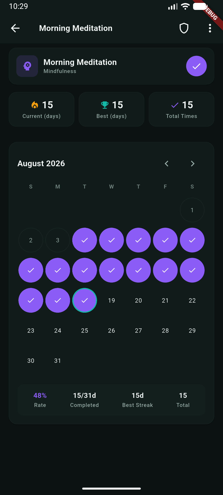
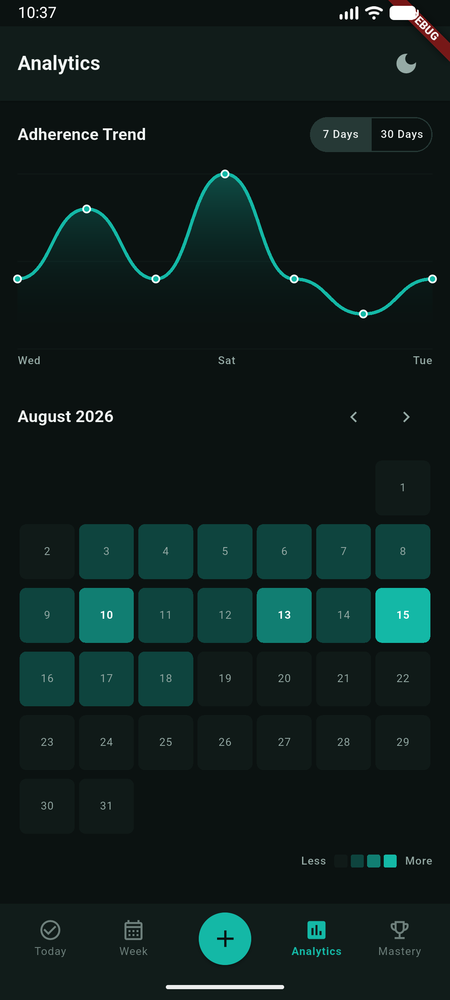

Phial tracks daily habits and focus sessions on your phone. Check in to complete the day, run the timer when you need depth, and a missed day does not have to break your streak. Offline. No account.

Check-ins, a focus timer, and shields when you miss — a quiet craft, not a cartoon RPG.
Sit with the charge for the session. Distraction-free countdown for deep work. Runs as a foreground service with persistent notification controls and auto-logged history.
A shield is a cork you earned. It keeps one miss from spilling the shelf. Earn 1 shield every 14 days of consistency, auto-protect missed days on rollover, or cork a date by hand.
Ranks in the craft of keeping the shelf: Novice to Grandmaster. Earn XP for every sealed day, climb a quadratic curve, and unlock streak multipliers up to 2.0x.
A high-density 7-day adherence grid built on canonical ISO Monday through Sunday boundaries. View adherence states and long-press to shield dates.
Supports yes/no check-ins, numeric targets with step chips (pages, reps), focus timers, and sub-day time-windowed intervals.
The phials live on the device. Nobody else’s vault. Drift SQLite locally, no account, no telemetry, no background tracking.
Explore the clean Material 3 interface optimized for one-handed operation and clear visual hierarchy.
The central dashboard gives you an immediate overview of daily progress with an interactive circular progress indicator, quick date stepper, category filter chips, and 48dp tappable check-in targets.

View full weekly adherence across all active habits on an ISO Monday through Sunday grid. Quickly identify completion patterns, protected shield days, and scheduled days off.

Distraction-free focus sessions integrated directly with habit goals. Features ambient noise playback, Do Not Disturb automation, and persistent notification service.

Deep-dive into individual habit performance with interactive year/month calendar heatmaps, streak statistics, best streak records, and total completion volume.

A shield is a cork you earned. Bank them by staying consistent, then cork a sick or travel day so the shelf does not spill.


Track long-term habit velocity through rolling adherence curves, completion rates, category breakdowns, and focus session volume.

XP, titles from Novice to Grandmaster, streak multipliers, and unlockable badges — ranks in keeping the shelf, not arcade noise.
Read the user guide for how streaks, shields, and focus work, or browse the open-source codebase on GitHub.